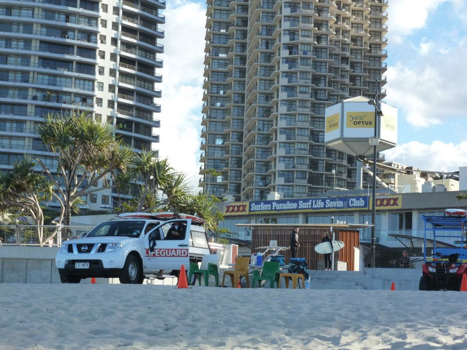
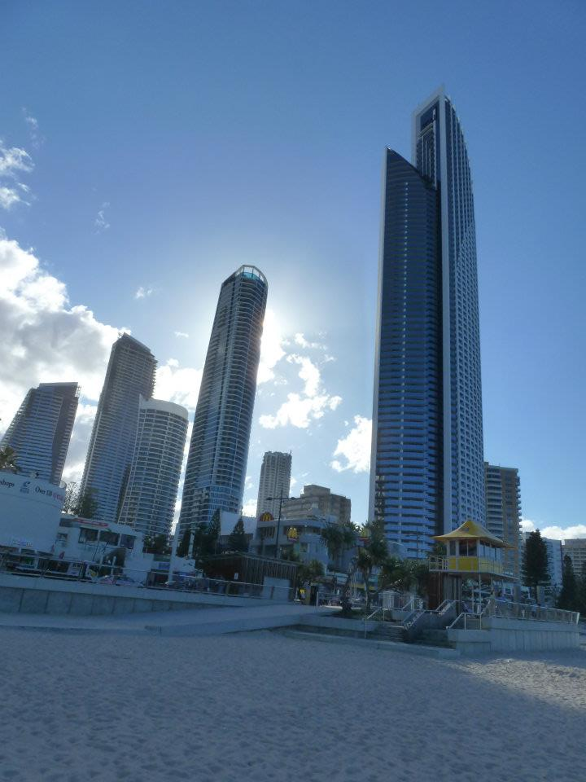
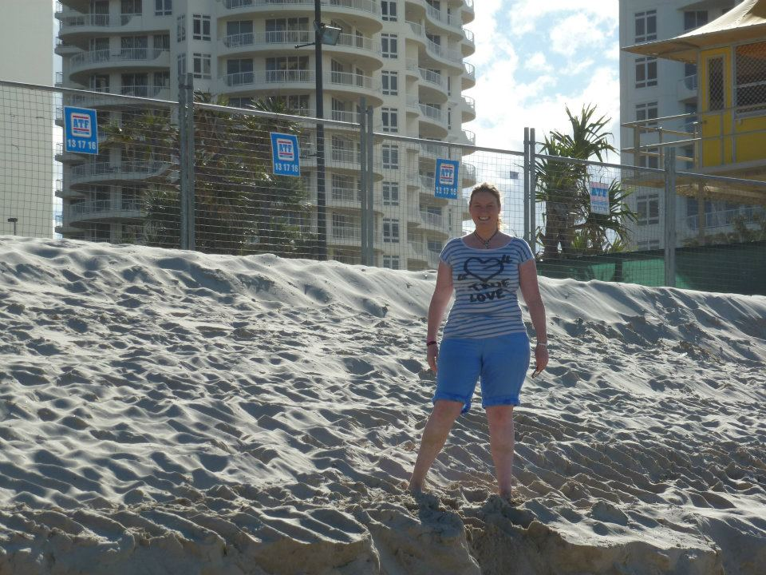
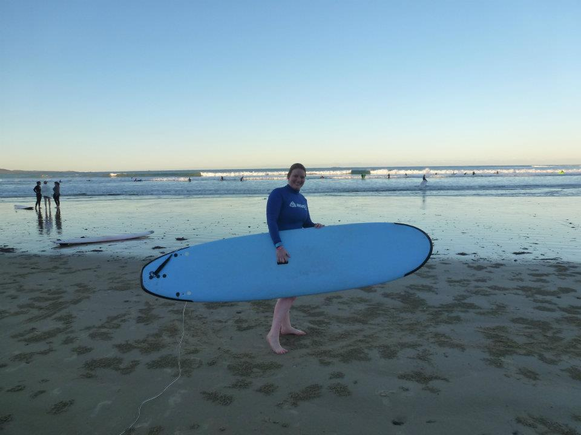

Gold Coast — skyscrapers, surf and our East Coast road trip
The Gold Coast was one of those places that looked exactly like the Australia we'd pictured beforehand: huge beaches, high-rise buildings and surf culture everywhere. And yes — in Surfers Paradise, I actually gave surfing a go.
Our own Gold Coast photos
These are from our trip — city towers meeting the beach, the waterfront skyline and a very Australian attempt at getting onto a surfboard.




Of course I had to try surfing
Surfers Paradise is the Gold Coast image everyone recognises — a long sweep of sand with a wall of towers behind it. We got the beach-and-city combination, but one of my favourite memories is much simpler: trying surfing there myself.
Whether my technique deserved the word “surfing” is another matter, but the photo with the board absolutely earns its place in the archive.
Gold Coast, Byron Bay & Coffs Harbour
The Gold Coast wasn't an isolated stop for us. It fitted into a wider journey along Australia's east coast, with Byron Bay and Coffs Harbour adding very different stops along the route.
🌊 Byron Bay
Beach life and a much more laid-back feel than the Gold Coast. We have our own Byron Bay memories elsewhere in the Australia guide too.
Read our Byron Bay story →🚙 Coffs Harbour
Another stop on our East Coast travels and part of the road-trip story linking Queensland with the New South Wales coast.
Take a virtual drive around the Gold Coast
The Gold Coast is available on Drive From Home, so you can explore it virtually before a trip — or revisit the roads and skyline afterwards.
Gold Coast activities & experiences
Browse current Gold Coast experiences below. These are planning ideas and don't imply that we personally took the exact tours displayed.
Disclosure: Some links on this page are affiliate links. If you book through them, we may earn a small commission at no extra cost to you.
More from our Australia travels
From tropical Queensland to the Red Centre, Tasmania and the Great Ocean Road, there's a lot more of our Australia story to explore.